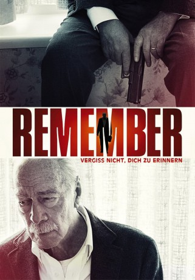

#3592 Remember - Vergiss nicht, dich zu erinnern
 
 IMDB-Wertung: 7.4 / 10
IMDB-Wertung: 7.4 / 10  Metascore: 0
Metascore: 0 
Zev -Christopher Plummer- hat schon so einiges im Leben durchgemacht und wohnt mittlerweile, unter zunehmender Demenz leidend, im Altersheim. Eines Tages findet sein Freund und Mitbewohner Max -Martin Landau- heraus, dass der frühere Aufseher, der vor über 70 Jahren im KZ die Familien der beiden umgebracht hat, nach wie vor am Leben ist und sich mit neuer Identität in Amerika aufhält. Die beiden gebrechlichen Männer fassen den Entschluss, den Ex-Nazi aufzuspüren und zu töten. Da Max dazu jedoch körperlich nicht mehr in der Lage ist, soll Zev die Aufgabe übernehmen. Der hat aufgrund seiner Krankheit jedoch sichtlich Probleme damit, sich an seine Vergangenheit zu erinnern, geschweige denn neue Dinge zu merken. Mit einem Brief von Max ausgestattet, der ihm mit seinen akribischen Anweisungen als Gedächtnisstütze dienen soll, macht sich der alte Zev auf die beschwerliche Reise, um späte Rache zu üben.
Jahr: 2015
Dauer: 94 Minuten
FSK: 12
Land: Kanada Studio: Tiberius FilmTonspuren: DD5.1 - ,
Untertitel: Deutsch, Englisch,
Auflösung: 1080p (1920x1080) Größe: 6973 MB
Genre: Thriller, Drama
Regisseur: Atom Egoyan
Drehbuch: John Singleton
Soundtrack:
Darsteller:
 Christopher Plummer als Zev Guttman
Christopher Plummer als Zev Guttman Dean Norris als John Kurlander
Dean Norris als John Kurlander Martin Landau als Max Rosenbaum
Martin Landau als Max Rosenbaum Henry Czerny als Charles Guttman
Henry Czerny als Charles Guttman Jürgen Prochnow als Rudy Kurlander #4
Jürgen Prochnow als Rudy Kurlander #4 Bruno Ganz als Rudy Kurlander #1
Bruno Ganz als Rudy Kurlander #1 T.J. McGibbon als Zev's Great Grandaughter
T.J. McGibbon als Zev's Great Grandaughter Natalie Krill als Boise Holiday Inn Receptionist
Natalie Krill als Boise Holiday Inn Receptionist James Cade als Gun Shop Owner
James Cade als Gun Shop Owner- Peter DaCunha als Tyler
 Janet Porter als Molly's Mom
Janet Porter als Molly's Mom Kim Roberts als Paula
Kim Roberts als Paula Duane Murray als Tyler's Dad
Duane Murray als Tyler's Dad- Sofia Wells als Molly
- Stefani Kimber als Inge Kurlander
 Juan Carlos Velis als Boise Taxi Driver
Juan Carlos Velis als Boise Taxi Driver Sugith Varughese als Cleveland Holiday Inn Desk Clerk
Sugith Varughese als Cleveland Holiday Inn Desk Clerk- Jane Spidell als Kristin Kurlander
- Brendan Gall als CBSA Agent
- Michael Koras als Amtrak Train Conductor
- Jean Christophe Loustau als Bus passenger
 Johnie Chase als Store Security Guard
Johnie Chase als Store Security Guard- Natalie Charles als Woman on Voice Mail
- Colleen Giles als Hotel guest
- Joey Iachetta als Shiva Minyan member
- Mark Roeder als Boise Dept. Store Clerk
- Mark Fisher als New York Taxi Driver
- Douglas E. Davidson als Retirement Home Resident , uncredited
- Yvonne E. Davidson als Retirement Home Resident , uncredited
- Tammy-lynn Wilcox als Housekeeper , uncredited
 Daniel Kash als Retirement Home Director
Daniel Kash als Retirement Home Director- Heinz Lieven als Rudy Kurlander #2
 Philip Williams als Bruneau Postal Worker
Philip Williams als Bruneau Postal Worker- Howard Jerome als Rabbi
- Sean Francis als Max's Aide
- Amanda Smith als Cele
- Liza Balkan als Rebecca Guttman
- Hazel Gorin als Retirement Home Senior #1
- Joyce Rivera als Foyers de Pionniers Nurse
- Nneka Elliot als Reporter
- Patrick Haye als Cleveland Town Car Driver
- Mary Walsh als Rudy #1's Cleaning Lady
- Ken Gorin als Retirement Home Senior #2
- Brendan Hennessey als Reno Cab Driver
- Mandi Knight als Cashier
- Lory Wainberg als Older Woman Piano Player
- Jessica Moss als Boise Holiday Inn Waitress
- Janine Davies als Waitress , uncredited
- Lou Israel als Shiva Minyan Member , uncredited
- Evie Moores als Store patron , uncredited
Datei: X:\2015(N-Z)\Remember - Vergiss nicht, dich zu erinnern (2015, FSK12, 1920x1080).mkv seit 07.05.2016
Festplatte: HD 2015(A-Z)
 Es gibt insgesamt 161 Filme in der Gruppe '2015(N-Z)'
Es gibt insgesamt 161 Filme in der Gruppe '2015(N-Z)'